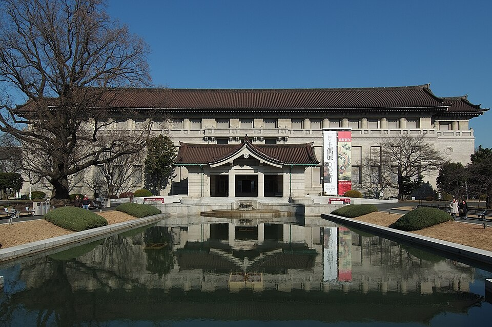
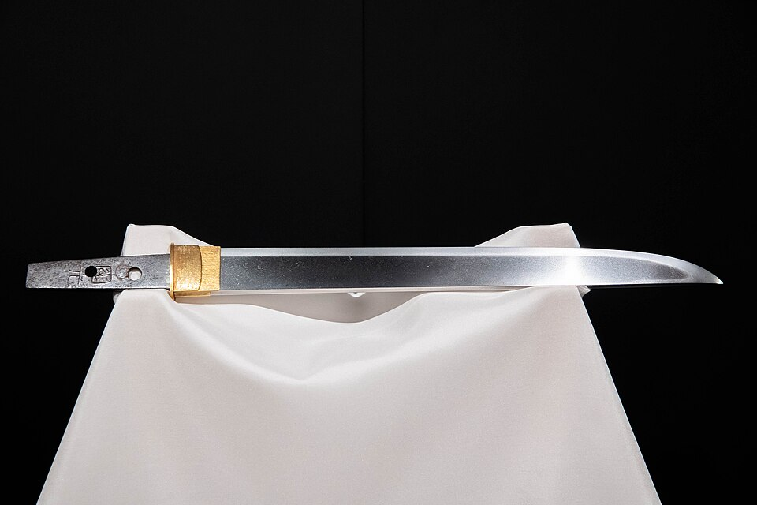
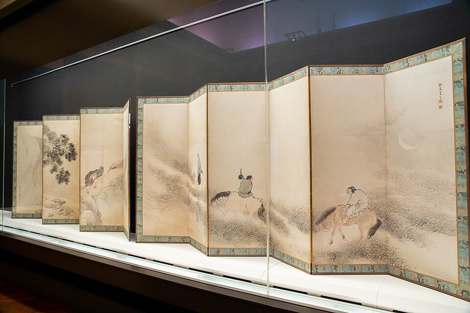
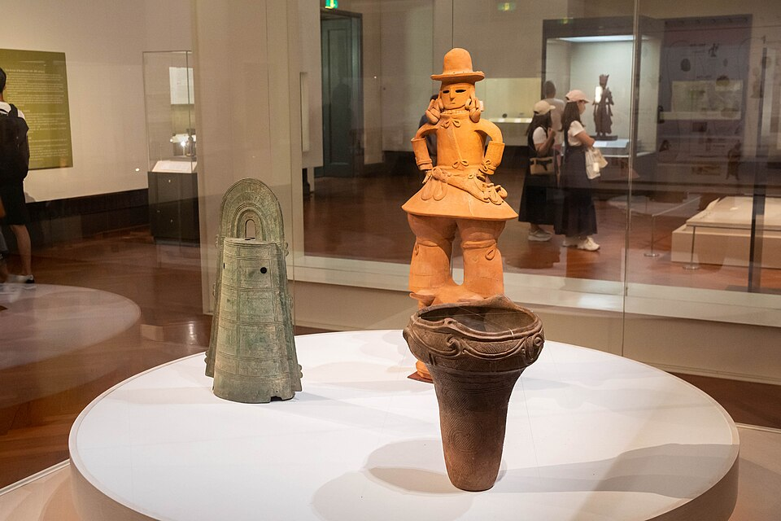
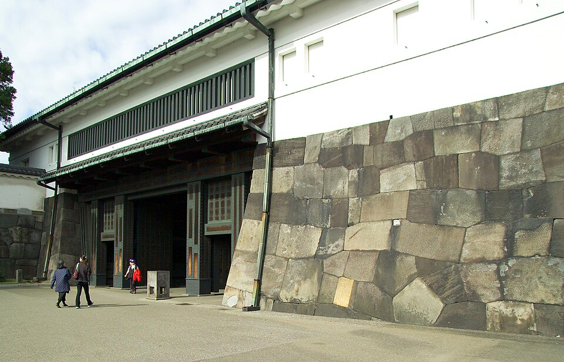
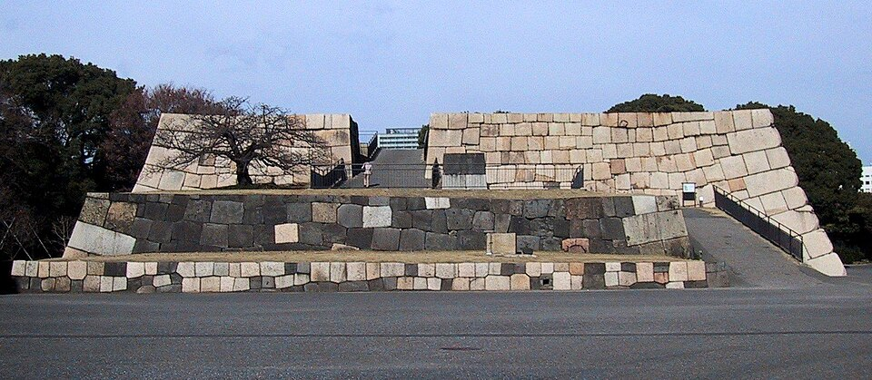
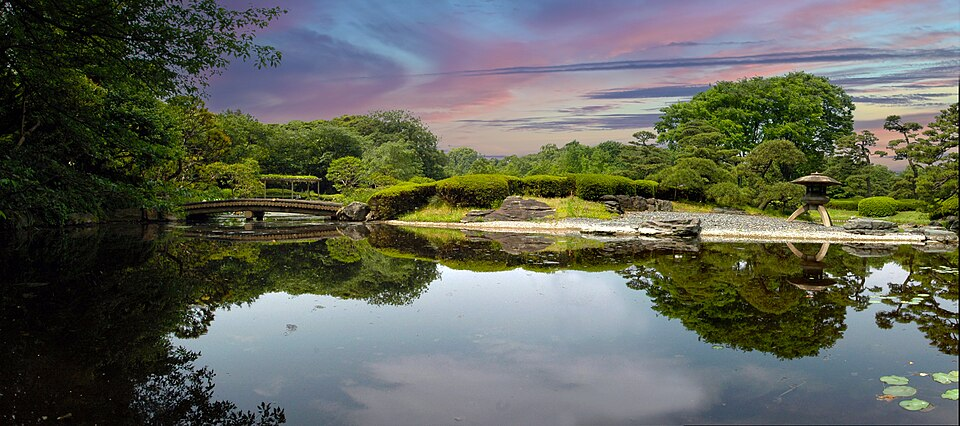

Среда 14.10: музей в дождь, потом замок Edo и дворец
🌦 Прогноз Open-Meteo от 14.10, 02:00: 11:00-14:00 дождь 0,5-1 мм в час, 15:00-17:00 без осадков, после 17:00 шанс дождя 55-69%.
Что ты уже видел и что осталось
| ✅ | Roppongi, Shibuya, Cat Street, Omotesando, Ginza вечером |
| ✅ | 11.10: Kagurazaka, Nakameguro, Daikanyama, Shibuya Sky (по плану дня) |
| ✅ | 12.10: лучники yabusame |
| ✅ | 13.10: Asakusa - пятиярусная пагода, мост Azuma, район вокруг |
| ⬜ | Ueno: Национальный музей, парк, рынок Ameyoko - в этом плане |
| ⬜ | Замок Edo (Восточный сад) + дворец + Tokyo Station - в этом плане |
| ⬜ | Yanaka (тихие улочки), Shinjuku (сад Gyoen, смотровая мэрии), Meiji Jingu + парк Yoyogi, teamLab, Kamakura - если останешься до пятницы |
Отель → Ueno
JR Akihabara: голубая Keihin-Tohoku (快速, на Minami-Urawa / 南浦和), платформа 1, днём едет без остановок прямо до Ueno. Или зелёная Yamanote (на Ueno / Ikebukuro, платформа 2), 2 остановки: Okachimachi, Ueno. В Ueno выход Park exit (公園口), дальше 10 мин пешком через парк к музею.
Tokyo National Museum (Национальный музей)
Самый старый национальный музей и самый большой художественный музей Японии: около 120 000 предметов, из них 89 «национальных сокровищ» (Wikipedia, данные на апрель 2023). Главное здание Honkan - японское искусство: мечи, ширмы, свитки, древние глиняные фигуры haniwa. На дождь: 2-2,5 часа внутри. Последний вход 16:30.
С 9.10 закрыты залы 3 и 8 азиатского корпуса Toyokan (официальный сайт), Honkan открыт.



.jpg){kind=link}

.jpg){kind=link}

.jpg){kind=link}
Парк Ueno → рынок Ameyoko, обед
Обратно через парк: по пути святилище Toshogu (до 16:30) и пруд Shinobazu. Дальше рынок Ameyoko вдоль путей у станции Ueno: уличная еда, рыба, фрукты - там же обед.

.jpg){kind=link}

.jpg){kind=link}

.jpg){kind=link}


Ueno → Tokyo
JR Ueno: Ueno-Tokyo Line (上野東京ライン), платформа 7, первая остановка - Tokyo (поезд 15:00 шёл на Ito). Или зелёная Yamanote / голубая Keihin-Tohoku в сторону Tokyo, ~8 мин. В Tokyo выход Marunouchi North (丸の内北口), ~10 мин пешком к воротам Otemon.
Восточный сад = замок Edo
Бесплатно. Ворота Otemon → караульня Hyakunin-bansho → лужайка Honmaru → Tenshudai (основание самой большой башни замка в Японии, 1607, сгорела в 1657) → сад Ninomaru с прудом. 1-1,5 часа. Вход до 16:00, закрытие 16:30.






Дворец снаружи: площадь и мост Nijubashi
От Otemon 10-15 мин на юг вдоль рва. Площадь Kokyo Gaien с соснами, вид на мост Nijubashi и стены замка, за ними небоскрёбы Marunouchi. Внутрь дворца - только по экскурсии, на сегодня не планируем.


Tokyo Station и домой
Аллея Gyoko-dori ведёт от дворца прямо к фасаду вокзала из красного кирпича (1914). Домой: JR Tokyo, зелёная Yamanote (на Ueno / Ikebukuro), платформа 4, 2 остановки: Kanda, Akihabara, 4 мин, 155 ¥. Если уезжаешь из Tokyo в среду - вокзал рядом.

.jpg){kind=link}
Если дождь сильнее: Edo-Tokyo Museum
Вместо Национального музея - музей истории Tokyo от Edo до наших дней, Ryogoku. JR Akihabara, жёлтая Sobu (на Tsudanuma), платформа 6, 2 остановки: Asakusabashi, Ryogoku, 4 мин, 155 ¥. Сайт музея на 14.10: «открыто 9:30-17:30». Оттуда в Tokyo к саду - JR Sobu обратно до Akihabara и Yamanote до Tokyo.